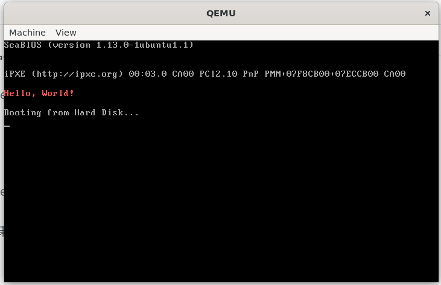

🤓 加载“OS”
实验任务
我们最后一步，是加载app（即OS）
task2：以下任务点是在本节需要完成的
- [x] 把上一节保护模式部分搬过来
- [x] 填写bootMain函数
切换到本节实验
请在完成《开启保护模式》之后，在实验根目录命令行里输入，切换到本节的分支：
git checkout load-os
框架理解
boot.c里面的bootMain函数的作用有如下两个：
- 把app.bin里面的内容读到0x8c00（在本实验我们这样规定，实际上不一定非是0x8c00）
- 跳转到0x8c00（Hint：使用内联汇编）
readSect函数是将第offset块磁盘读出，读到物理地址为dst的内存中。
exercise11：请阅读项目里的3个Makefile，解释一下根目录的Makefile文件里
cat bootloader/bootloader.bin app/app.bin > os.img
这行命令是什么意思。
exercise12：如果把app读到0x7c20，再跳转到这个地方可以吗？为什么？
如果你成功加载app，就可以看到下图。恭喜你，成功完成了实验！:tada::tada::tada:
